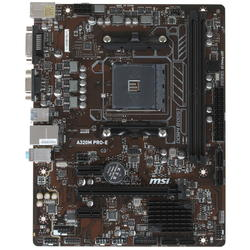
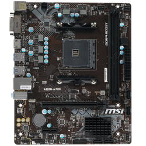
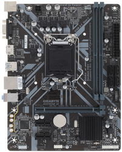
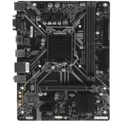

| вот так оно выглядит | вот так оно называется | вот что про это говорит маркетолог производителя | а вот столько оно стоит |
|---|---|---|---|
|  | MSI A320M PRO-E |
Базирующаяся на чипсете AMD A320 материнская плата MSI A320M PRO-E рассчитана на монтаж процессоров AMD AM4. Модель подойдет для сборки домашних и офисных компьютеров. Такой системный блок с легкостью справится с любыми типовыми программами, в том числе – с видеоплеерами, редакторами текстов и таблиц, а также с интернет-браузерами.
подробнее |
3 799 ₽ |
|  | MSI A320M-A PRO |
Соответствующая форм-фактору Micro-ATX материнская плата MSI A320M-A PRO отличается компактностью: габаритные размеры устройства составляют 226x187 мм. Миниатюрность не мешает модели обеспечивать уровень функциональных возможностей, который удовлетворит потребности большого количества пользователей.
подробнее |
3 799 ₽ |
|  | GIGABYTE H310M H |
Материнская плата GIGABYTE H310M H оптимальна для сборки компьютера офисного класса, применение которому можно будет найти и дома. Такой системный блок отлично подходит для удаленной работы, в том числе – в Интернете. Компьютер может быть компактным: плата соответствует форм-фактору Micro-ATX. Размеры устройства – 226x174 мм.
подробнее |
3 850 ₽ |
|  | GIGABYTE H310M H 2.0 |
Материнская плата GIGABYTE H310M H 2.0 имеет прямоугольную форму: ее габаритные размеры составляют 226x174 мм. Плата подойдет для сборки офисной или домашней системы, которая преимущественно используется для работы с офисными программами и интернет-браузерами. Для установки видеокарты можно использовать слот PCI-E x16. Достоинством компактной платы является наличие 2 слотов PCI-E x1.
подробнее |
3 850 ₽ |